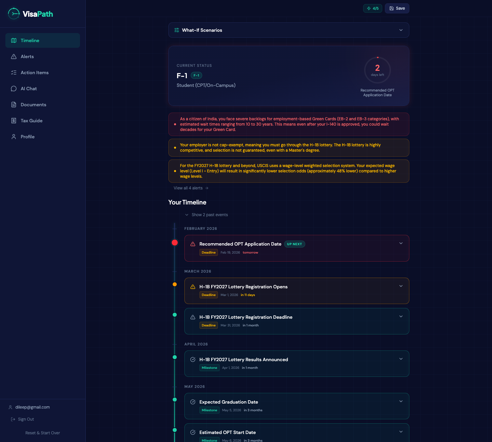
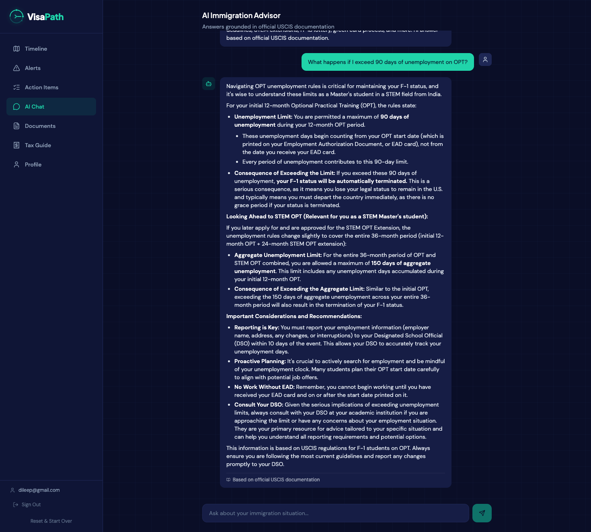
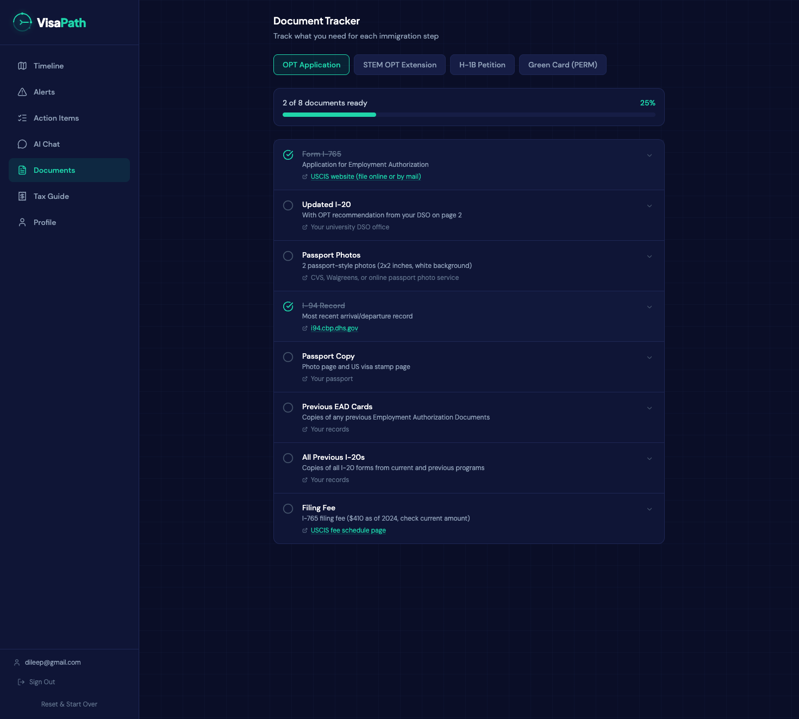

AI Immigration Timeline Planner for International Students
Never miss a visa deadline again. VisaPath takes your specific situation and builds a personalized roadmap from OPT all the way to green card — powered by AI, grounded in real USCIS rules.
DevDash 2026
Built by Dileep Kumar Sharma | Rochester Institute of Technology
The Problem
Immigration info is scattered, confusing, and high stakes
There are over 1 million international students in the US, and every one of them navigates a maze of visa deadlines, work authorization rules, and immigration paperwork. Miss one deadline and you could lose your legal status.
OPT Filing Window
90 days before graduation to 60 days after. Miss it by a single day and you lose work authorization. No second chance.
CPT Overuse Trap
Using 12+ months of full-time CPT permanently kills your OPT eligibility. Most students don't learn this until it's too late.
Country Backlogs
India and China nationals face 10–30+ year green card waits in EB-2/EB-3. This dramatically affects long-term planning.
Scattered Information
Students piece together info from USCIS.gov, Reddit, university DSO offices, and $300+/hr immigration lawyers.
The Solution
One personalized timeline for your entire immigration journey
You fill out a short onboarding form — visa type, degree, STEM status, graduation date, country, career goal — and VisaPath generates a complete immigration roadmap tailored to your exact situation.
📅 Smart Timeline
AI generates every deadline and milestone, color coded by urgency, grouped by month, with expandable action items.
⚠️ Risk Alerts
Flags CPT overuse, country backlogs, H-1B lottery odds, wage-level weighting, and approaching deadlines.
💬 AI Chat (RAG)
Ask any immigration question. Answers grounded in 8 USCIS knowledge base documents — not hallucinated.
📋 Document Tracker
Step-by-step checklists for OPT, STEM OPT, H-1B, and Green Card filings with document tracking.
💰 Tax Guide
Personalized tax filing guidance based on visa type, country, treaty benefits, and residency status.
🔬 What-If Simulator
Change graduation date, STEM status, or country and instantly see how your entire timeline shifts.
How It Works
Architecture & Timeline Generation
Timeline Generation Pipeline
1
Student fills onboarding form — visa type, degree, STEM status, graduation date, country, career goal
2
Backend assembles prompt with 56 hardcoded USCIS rules, filing fees, H-1B lottery stats, country backlogs
3
Gemini 2.5 Flash generates structured JSON timeline grounded in real rules, not training data
4
Risk engine analyzes for CPT overuse, country backlogs, wage-level lottery odds
5
Frontend renders interactive timeline with urgency colors, expandable cards, month grouping
RAG Chat Pipeline
1
8 immigration docs split into 21 chunks, embedded with gemini-embedding-001 (768 dim)
2
Query embedded and matched via cosine similarity in ChromaDB (top k=4)
3
Retrieved chunks + user visa context sent to Gemini for a grounded answer
Key Design Decision
We don't rely on AI training data for immigration rules. 56 hardcoded USCIS rules are injected into every prompt as ground truth.
System Architecture
React 19 + TypeScript + Tailwind CSS v4 (Frontend SPA)
| REST API (JSON over HTTPS)
v
Python 3.13 + FastAPI (Backend)
|── Timeline Generator ──> 56 USCIS Rules + Fees + Backlogs ──> Gemini 2.5 Flash
|── Chat Service ────────> ChromaDB RAG (21 chunks) ─────────> Gemini 2.5 Flash
|── Tax Guide Service ───> RAG Context ──────────────────────> Gemini 2.5 Flash
|── Auth Service ────────> JWT + bcrypt ──> PostgreSQL
|── Risk Analyzer ───────> Immigration Rules + Country Data
Risk Analysis Engine
| Risk | Severity | Trigger |
|---|
| CPT overuse (12+ months) | Critical | Permanently kills OPT eligibility |
| OPT deadline approaching | Critical | <30 days to filing window close |
| Country backlog (India/China) | Warning | 10–30+ year green card waits |
| H-1B wage-level weighting | Warning | Lower odds for entry-level under FY2027+ rules |
| Non-STEM limited OPT | Info | Only 12 months, no STEM extension |
| H-1B lottery uncertainty | Info | ~25–30% selection rate |
Tech Stack
Built With
| Layer | Technology |
|---|
| Frontend | React 19, TypeScript, Vite 7 |
| Styling | Tailwind CSS v4 (custom dark theme) |
| Routing | React Router v7 |
| Backend | Python 3.13, FastAPI |
| AI Model | Google Gemini 2.5 Flash |
| Embeddings | gemini-embedding-001 (768 dim) |
| Vector DB | ChromaDB + LangChain |
| Auth | JWT + bcrypt |
| Database | SQLite (dev) / PostgreSQL (prod) |
| Hosting | Azure App Service (Student tier) |
| CI/CD | GitHub Actions |
Key Technical Decisions
- 56 hardcoded USCIS rules injected into every AI prompt — we don't rely on model training data
- RAG pipeline with 8 docs, 21 chunks, cosine similarity — answers cite real USCIS sources
- Client-side date recalculation — cached timelines recalculate urgency on every render
- Fire-and-forget navigation — animated loading turns 15s AI wait into engaging experience
- Lazy-loaded routes — main bundle reduced from 483KB to 270KB
- 4-layer rate limiting — per-IP, daily AI tracker, frontend pre-check, Gemini 429 cooldown
Screenshots
App Interface

Timeline Dashboard

AI Chat (RAG)

Document Tracker
Traction
Real Students, Real Impact
We shared VisaPath with 15 classmates at RIT, all F-1 international students. Their feedback validated that the tool catches things even knowledgeable students miss.
"I knew I had to file OPT before graduation, but VisaPath calculated my exact filing window down to the day and showed me I only had 23 days left. I was planning to file next month — that would have been too late."
Priya Sharma — MS Data Science, F-1
"I used the what-if simulator to compare staying on OPT vs applying for H-1B through a cap-exempt employer. It showed me a path I didn't even know existed — skipping the lottery entirely through a university-affiliated research position."
Ananya Reddy — MS Bioinformatics, F-1
"The tax guide told me India has a US tax treaty for students that most people don't claim. It also showed the exact forms I need as a dual-status filer."
Siddharth Joshi — MS Computer Science, F-1
"The risk engine flagged that the H-1B lottery is switching to wage-level weighting in FY2027. VisaPath laid out alternate paths like the O-1B and EB-2 NIW that I hadn't considered."
Vikram Singh — MBA, F-1
Business Model
How VisaPath Becomes Sustainable
| Tier | Price | Includes |
|---|
| Free | $0 | 5 timeline generations, basic risk alerts, document checklists |
| Pro | $9.99/mo | Unlimited timelines, AI chat, what-if simulator, tax guide, push notifications |
| University | $499/yr | DSO advisor dashboard, bulk student management, analytics, priority support |
TAM: 1M+ students
~400K new F-1 students enter the US each year. Average spend on immigration help: $500–2K.
0 direct competitors
No existing tool provides AI-powered personalized immigration timelines for students.
If We Win
Prize Money Investment Plan — $5,000
| Amount | Use | Details |
|---|
| $2,000 | User acquisition at 10 universities | Campus ambassadors, student org partnerships, DSO outreach |
| $1,500 | AWS production infrastructure | Always-on ECS, RDS PostgreSQL, CloudFront CDN — 12 months |
| $1,000 | AI API costs | Gemini API for timeline, chat, tax guide at scale for 1,000+ users |
| $500 | Legal review | Immigration attorney validates our 56 USCIS rules and disclaimers |
$5/user customer acquisition cost — 12 months of runway to reach 1,000 active users
What's Next
Future Roadmap
- Push notifications for upcoming deadlines (email + browser)
- Support for J-1, L-1, O-1 visa types
- Cap-exempt employer lookup database
- Live USCIS processing time integration
- University DSO advisor dashboard
- React Native mobile app (iOS + Android)
- AWS migration for production-grade hosting
- Partnerships with university international offices
AI Disclosure
Runtime AI (in the product)
Google Gemini 2.5 Flash powers timeline generation, AI chat Q&A, and tax guide. Google gemini-embedding-001 creates vector embeddings for the RAG pipeline.
Development AI (building the product)
Claude Code (Anthropic) was used as a coding assistant during the hackathon for code generation, debugging, and iteration.
All immigration guidance in the app includes disclaimers that it's general information, not legal advice. Users are always directed to consult their DSO or an immigration attorney.
VisaPath — AI Immigration Timeline Planner | DevDash 2026 | Dileep Kumar Sharma | Rochester Institute of Technology